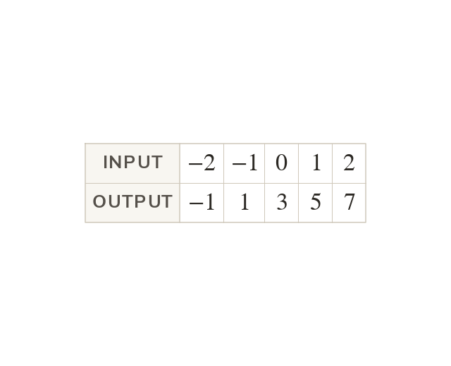

A table of values turns an equation into points
A table of values turns an equation into coordinate pairs you can plot. Substitute each x-value into every term of the equation.
An equation in x and y states a relationship; it is not yet a picture. A table of values is what converts it into a list of coordinate pairs, and a coordinate pair is something that can be plotted. Each chosen x-value is substituted into the whole equation - every term of it, not just the term containing x - and the y-value that comes back is that x-value's partner. This is the same move as substituting a position into an nth term rule: an input goes in, an output comes out, and the equation itself does not have to be rearranged first. Any linear equation can be substituted into as it stands.